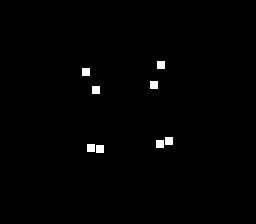

|
OpenSNES
Modern Open-Source SNES Development SDK
|
|
OpenSNES
Modern Open-Source SNES Development SDK
|

A wireframe cube's 8 corners tumbling in 3D — with every rotation AND the perspective projection computed by the DSP-1 coprocessor (NEC µPD77C25), not the 65816. Each frame the CPU hands the DSP-1 a rotation matrix and 8 model-space points; the DSP-1 rotates them (dsp1Objective), projects them to the screen with a true perspective divide (dsp1Project, configured once by dsp1Parameter), and the CPU just places 8 sprites at the returned H/V.
This is the SDK's first DSP-1 example, and the third leg of the enhancement-chip family alongside SA-1 and Super FX.
The DSP-1 runs Sony's mask-ROM firmware. Emulators that low-level-emulate the chip (including luna) need that firmware supplied — it is copyrighted and not shipped with the SDK:
Without it, the ROM still boots but the coprocessor stays inert (the cube won't move). High-level-emulation emulators (snes9x) run it firmware-free.
Run dsp1_cube.sfc in an emulator with the DSP-1 firmware available.
console, dma, sprite, dsp1